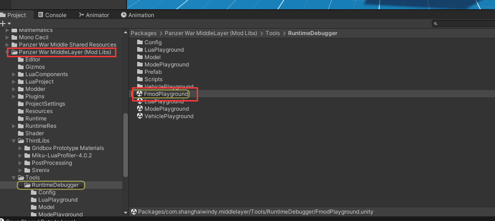
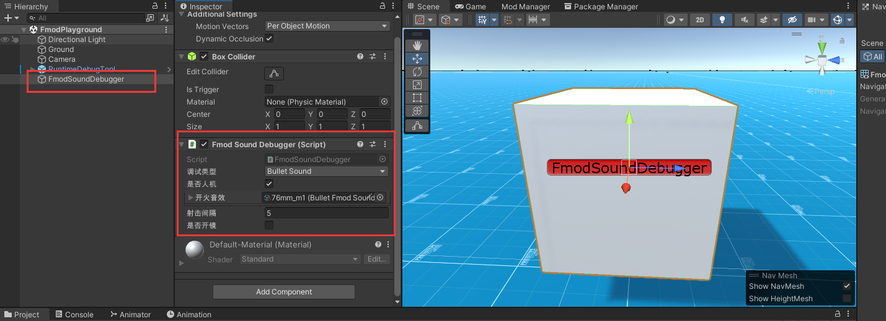
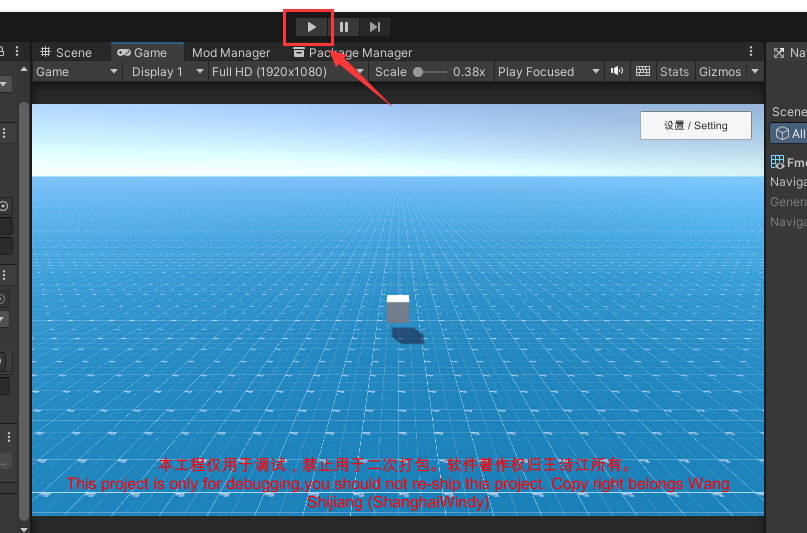

26.5. Fmod Sound Debugging Tool Fmod 音效调试工具
在 Packages/com.shanghaiwindy.middlelayer/Tools/RuntimeDebugger/FmodPlayground.unity 目录下，
提供了一个 Fmod 音效调试场景，该环境与游戏真实环境逻辑保持一致。可用于快速调试不同距离下的 Fmod 音效。
The path above holds a scene for debugging Fmod audio. Its logic is kept consistent with the real in-game environment, so you can quickly test how an Fmod sound behaves at different distances.

Firing Sound Debugging 开火音效调试
找到 FmodSoundDebugger 物体，选择 Bullet Sound，拖入自己的开火音效，然后点击运行。
Find the FmodSoundDebugger object, select Bullet Sound, drag in your own firing sound, and then click Play.


随后即可听到开火音效的循环播放。进入 Scene 窗口拖动该物体以改变其距离（例如 Z 值），即可测试不同距离下的音效强度。
You will then hear the firing sound play on a loop. Go into the Scene window and drag this object to change its distance — its z value, for example — to test how loud the sound is at different distances.